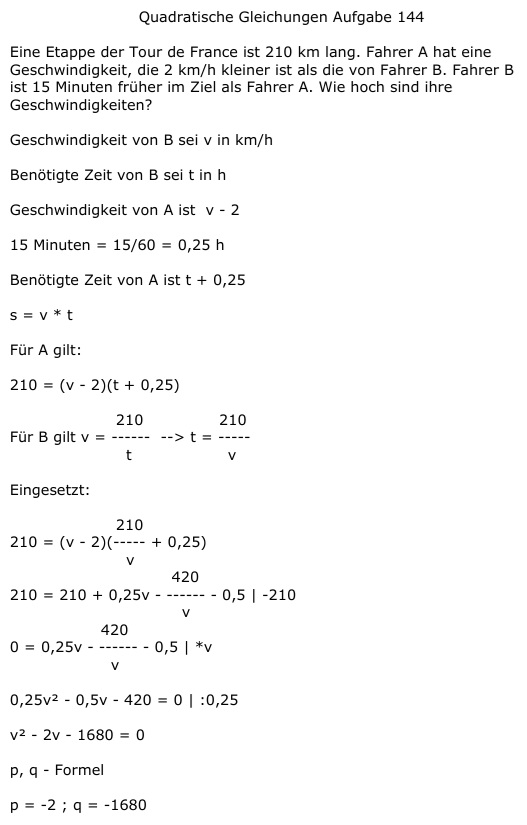

Aufgabe 144 Eine Etappe der Tour de France ist 210 km lang. Fahrer A hat eine Geschwindigkeit, die 2 km/h kleiner ist als die von Fahrer B. Fahrer B ist 15 Minuten früher im Ziel als Fahrer A. Wie hoch sind ihre Geschwindigkeiten? Geschwindigkeit von B sei v in km/h Benötigte Zeit von B sei t in h Geschwindigkeit von A ist v - 2 15 Minuten = 15/60 = 0,25 h Benötigte Zeit von A ist t + 0,25 s = v * t Für A gilt: 210 = (v - 2)(t + 0,25) 210 210 Für B gilt v = ------ --> t = ----- t v Eingesetzt: 210 210 = (v - 2)(----- + 0,25) v 420 210 = 210 + 0,25v - ------ - 0,5 |-210 v 420 0 = 0,25v - ----- - 0,5 | *v v 0,25v² - 0,5v - 420 = 0 |:0,25 v² - 2v - 1680 = 0 p, q - Formel p = -2 ; q = -1680  v1,2 = 1 ± 41 v1 = 1 + 41 = 42 km/h Geschwindigkeit von B v2 = 1 - 41 = -40 keine Lösung, negative Geschwindigkeit Geschwindigkeit von A = 42 - 2 = 40 km/h